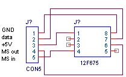

April 2003
Multi-PIC communication
Slave PIC
The minimum PIC at the slave side is determined to be a 12F629 or 12F675, running on it's internal (calibrated) 4 MHz clock.
Communication Bus
The connections to the slaves provides the slave with power and are also used to communicate between Slaves and Master.
Because this will require at least 3 lines and probably 4 lines (to be fast enough), we'll go for 5 lines.
By choosing 5 lines, these connections can also be used to (re-)program the PIC in the slave.
There's one other reason for choosing 5 lines, it fits exactly in a 2 width Lego-brick.
Maybe it's even possible to hook a slave-device directly (or with a few passive components in the DB9 connector) to a serial RS232 port.
Because the simple PICs in the slave devices don't have a hardware uart, it's necessary to look what the fastest receive and transmit loop in software is.
For 115kBaud, bit-period is about 8.7 usec, so a 9 usec cycle, with each fourth cycle of 8 usec, will do very well.
|
;fastest transmit routine (for 1 bit)
;with equidistant high and low
assembler
btfsc data,0 ;1 2
goto bit1_high ;2
nop ; 1
bcf data_pin ; 1, subtotal = 4
goto bit1_low ; 2
bit1_high: ;
bsf data_pin ;1 subtotal = 4
goto bit1_low ;2
bit1_low: ;=6 =6
end assembler ;that's 165 kBaud @4MHz
-- -------------------------------------------------------
; an another far more faster routine
assembler
rlf data,f ;1
rlf data_port,f ;1 assumes pin0 is data_pin
;=2
end assembler ;that's 500 kBaud @4MHz |
;fastest receive routine (for 1 bit)
data = 0xFF ;start with received all ones
assembler
btfsc data_pin ;1 2
goto bit1 ;2
bcf data,0 ; 1
bit1: ;=3 =3
end assembler
;that's 330 kBaud @4MHz |
|
OSCCAL
$00 8.0 usec
$70 6.0 usec
$7C 5.8 usec
$FC 4.8 usec |
12F675
Calibration word at $3FF was $347C ("retlw $7C"), which gives a calibration of $7C (only the 6 msbits are used for the calibration.
On the left some measurements @5V supply, (@Ta 25...40 Celcius ??).
Software was written to give an exact square wave with a period of 6 usec. |
|
Slave in standard circuit |
Programming a slave |
Slave "direct" to RS232 |
|
 |
|
|
|
|
PIC |
Slave |
Programming |
RS232 |
|
1 |
Vdd |
+5V |
+5V |
RTS (+5V) |
|
2 |
GP5 (T1,noAD) |
- application |
- |
- application |
|
3 |
GP4 (gate1,Fosc/4) |
- application |
- |
- application |
|
4 |
GP3 (input only) |
Master-Slave IN |
Vpp |
DTR (Master Slave IN) |
|
5 |
GP2 (T0) |
- application |
- |
- application |
|
6 |
GP1 (Vref) |
Bidirectional Data Line |
program clock |
RxD (via FET) |
|
7 |
GP0 |
Master-Slave OUT |
program data |
Master_Slave OUT |
|
8 |
Vss |
GND |
GND |
GND (GND) |
Disadvantages:
- Vref (GP1) is used on the connection pin (because it's needed as the program clock)
- direct connection to an RS232, inhibits sending messages from PC to the PIC
|
Direct RS232 connection
The idea is to connect a slave (or more slaves) "directly" to a RS232 line, without any external power supply.
Basically all inactive lines are negative (-12V). Because the RxD line will be more inactive then active, the line must be held passive low. Therefor the PIC must be placed between positive (RTS) and ground. The power supply is limited by zener (D1) and buffered by C1. Further we have to use a P-FET (Q1) to control the RxD line.
For control of the Master-Slave input, we must use DTR. Because it's connected to the Vpp of the PIC we must use a (shottky) clamp diode (D2).
Now the only available line to generate the negative power supply is TxD. So unfortunatly wecan't send messages to the slave.
Master-Slave OUT, can still be used to connect other slaves. |
|
Commands
|
Code |
Master / Slave signal |
Description |
|
- |
too short negative puls (noise spike) |
Slave ignores this puls |
|
- |
short negative puls,
Master frees dataline |
On the trailing edge of this puls, the first slave starts to transmit its data, then it frees the dataline and sets the same short negative puls on the master/slave output, so the next slave can transport it's data. |
|
- |
long negative puls,
Master frees dataline,
after |
If the puls lasts long, the slave puts a low puls to it's master/slave output, to signal the rest of the slaves.
or ???
If the puls lasts long, slave recognizes this as a command and ... the slave puts a low puls to it's master/slave output, to signal the rest of the slaves.
After the trailing edge, (now all the slaves are supposed tobe listening), the master sends a command.
The command is either a genereral command for all slaves or a addressed command for the specific slave. |
|
Code |
Master Command |
Slave Respons |
Description |
|
|
Identify Yourself |
ID-number
Number of databytes at each transmission
maximum output frequency |
Every unique device has an unique ID-number.
Number of bytes in range [0..31]
Frequency = 1, 10, 100, 1000 Hz (coded by 00,01,10,11).
By this query, the master knows how many devices are present, which devices are present and what the global specifications of the devices are. |
|
|
Here's your address |
- |
After a reset, all devices have no address.
When the master starts to deal the addresses, the first address is given to the first device, the second address to the second device and so on.
Slave stores the address (in ram) for future use.
Most commands will be for 1 specific device, whoes address is given. |
|
|
|
|
|
|
Code |
Address +
Command |
Description |
|
|
Calibrate |
The Slave will give a calibration puls on the dataline.
The calibration puls should be 1 msec in length. |
|
|
Calibrate +1 |
The slave will increase the pulslength, by lowering the oscillator calibration word.
Then the slave agains gives a calibration puls on the dataline. |
|
|
Calibrate -1 |
The slave will decrease the pulslength, by increasing the oscillator calibration word.
Then the slave agains gives a calibration puls on the dataline. |
|
|
Calibrate OK |
The slave stores the calibration word in EEPROM for futher use. |
dsd
dsdsf f sf sdf sd
|
OLD GOAL 
The main purpose of this project is to combine the datastream of 1 to a maximum of 8 PICs to a serial or USB port of the PC, as shown on the right.
The "datageneration" is done by 16F628's, running at 20 MHz, and producing datastreams of about 100 kb/s.
The total datastream to the PC is reduced by some algoritm and is limited to about 200 kb/s.
Besides the main datastreams, there are small datastreams (commands) in the opposite direction. |
|
Some choices seems to be very obvious:
- it's preferable to use also a 16F628 as the collection PIC
- some kind of master-slave protocol, where the collection PIC is the master and all other PICs are slaves
- the communication must be quiet fast, otherwise the PICs won't have enough time to their primary job
- the communication must be done in software, because the USART of the collect PIC is needed for the PC-interface
- the collect PIC must receive the data parallel, otherwise it's too slow
- as few lines as possible must be used for the inter-PIC communication, otherwise the collect PIC won't have enough IO-lines
|
Basic master-slave communication |
Master
Send_Command ( command )
if command_read then
Receive_Bytes
endif
Do_Calculations
Send_to_PC |
Slave
Read_Command ( command )
if command_read then
Send_Bytes
else
Do_Something_Else
endif
Gather_New_Data |
The next step is to look in more detail to the lower level communication, to see if the requirements can be satisfied.
First choices:
- one bi-directional data line for each slave processor
- one clock line, which is used in wired-or by all slaves and the master
This approch uses a minimum of IO-lines, and will give enough flexibility for the needed command/data structure.
There's one important IF, all slaves should by synchronized, so they'll have their data ready at the same time.
At the moment it's assumed that this synchronization demand can be satisfied.
|
Master-Slave communication details
The algoritmes on the right only take in considerations the major datastreams from slaves to master.
There's one tricky point, that needs a closer investigation, when data is read by the master the master sets clock low and after that, there must be enough time for all slaves to see this low clock !! |
Master
loop:
set clock high
wait till clock high
read data
set clock low
-- tricky, wait ??
end loop |
Slave
loop:
setup data
set clock high
wait till clock high
wait till clock low
set clock low
end loop |
A: here we wait till all devices (slaves and master) put their clockline in high impedance state, so the clockline will go high., indicating everyone is ready, slaves are listening and master can start a communication.
B: Master sets up the first bit, 0=reading data stream from slave to master, 1=master sends a command to the slaves
C: Master pulls the clockline low, indicating to the slaves a valid databit
D: Only a very short time after C (because all slaves are listening), the data is removed by the master.
E:
G: master sets clock low, indicating reading databit done
H: slaves setup the new databit